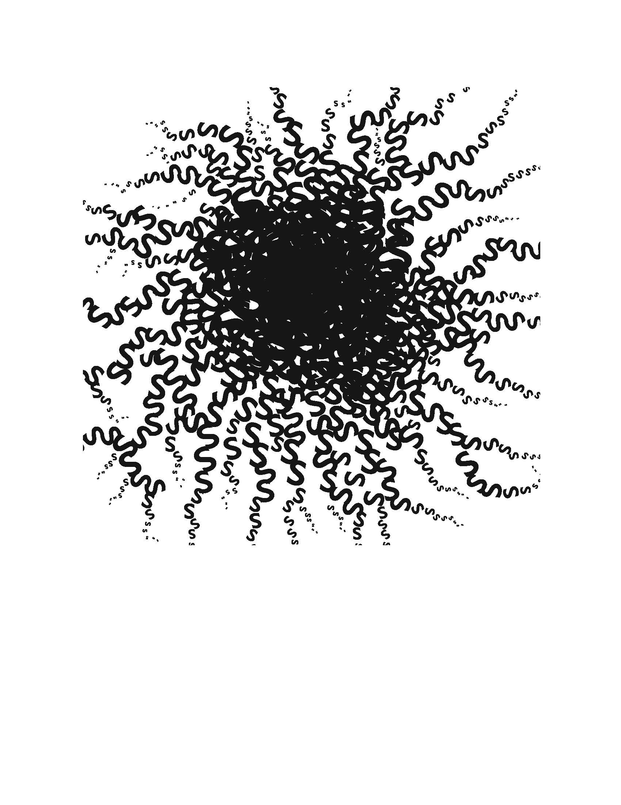
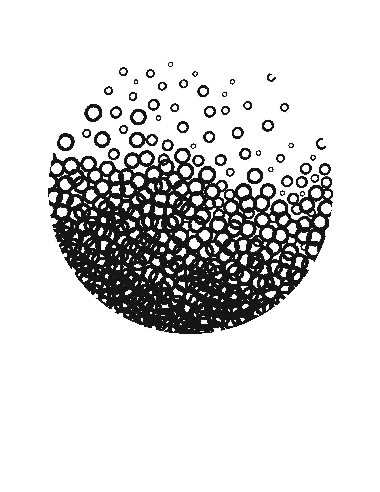
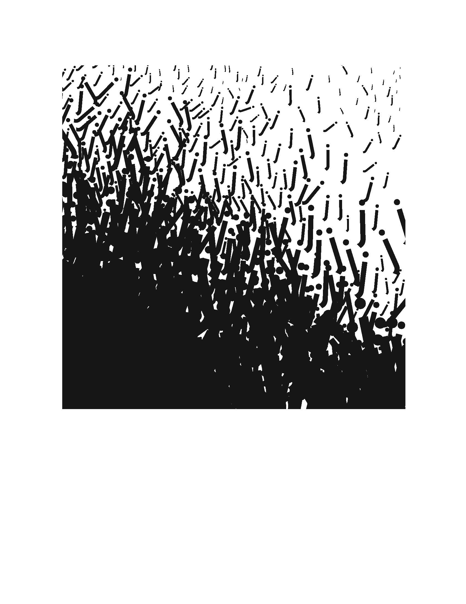
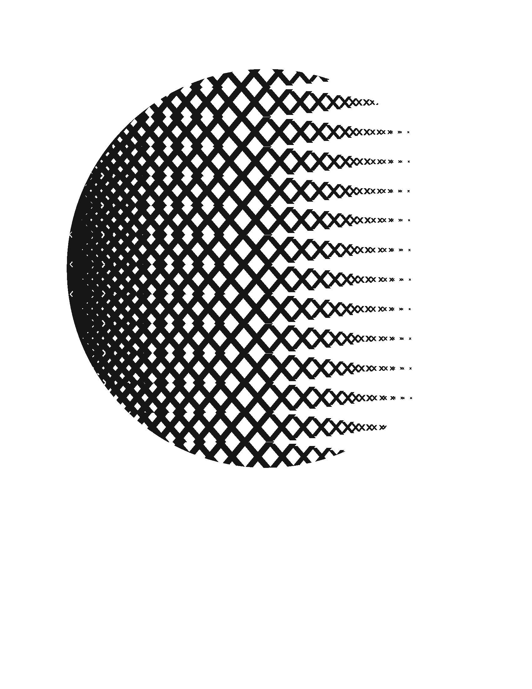
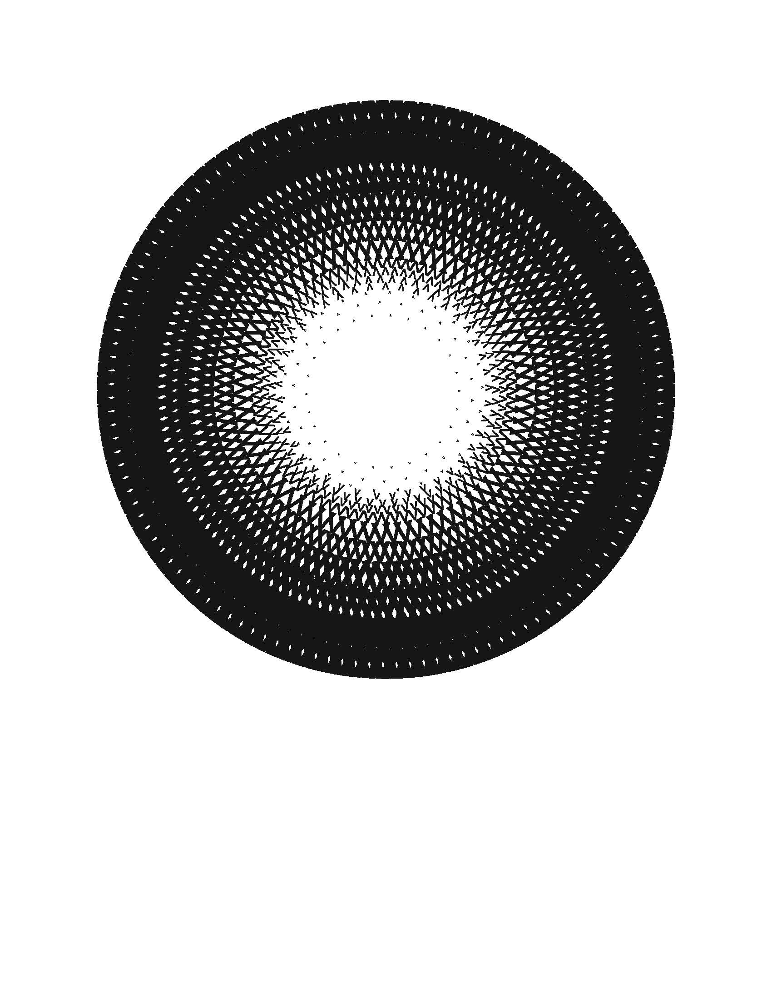

Design Department Book

I created this book in my Letterforms and Typography class. The goal of this book was to create a book that embodied the Design Department at UC Davis. For my book, I wanted to play with the colors of traditional 3D glasses, cyan and red. I felt that the two colors had contrast, but fit well together. You can view the whole book here! To create this book, I implemented many principles I learned throughout the course.
Exercises
    Our first exercise that we did in this course was a typeface study and exploration. I was assigned the typeface Gill Sans; with this exercise, I closely examined Gill Sans. In the first exploration, I looked at different parts of different letters to create a symbol. Afterwards, I wanted to take an artistic approach to this exercise. I picked on letter for each and played with scale to create a a gradient effect and motion.
Once our class was familiar with exploring and understanding typography; we started to learn about visual hierarchy. For this exercise, we were given a body copy of text that we had to organize to create visual hierarchy. At the beginning of this exercise, we were tasked with cutting individual pieces of information and taping it onto a piece of paper. Once we understood the concept of visual hierarchy, we transferred our ideas onto the computer. Then, we created more iterations to explore the concept more. As we created more iterations, the amount of limitations we had decreased.


At the beginning of this, I first started to explore the images by making image-only maquette. I tried to look for the most important and visually interesting parts of the pictures. By exploring different orientations and sizes, I learned how the images worked and what fit the images best.

Afterwards, I created my first iteration of the book. Originally it was designed to be 8.5 inches by 5.5 inches; to save paper, I printed two pages on to one paper. I ended up enjoying the size, so I kept my book to be this size. After several iterations, I was satisfied with the design and printed the final one. Once I finished printing and cutting the pages to size, I bound the book using wood glue.